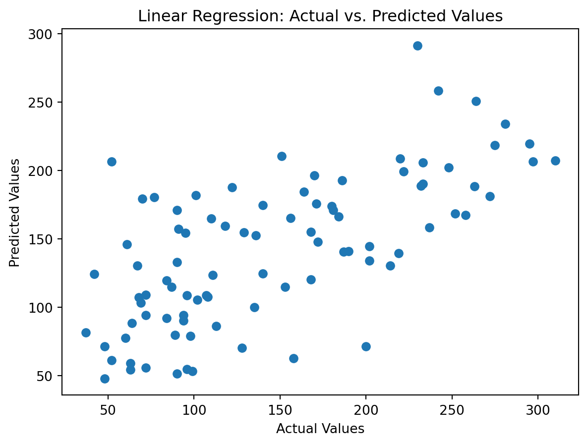

Linear and Nonlinear Regression Here is an overview of linear and nonlinear regression in machine learning:
Linear Regression: - Models the relationship between dependent and independent variables as a linear function. - Takes the form: y = mx + b - Simple and fast to implement, good exploratory technique. - Prone to underfitting and cannot capture nonlinear patterns. - Examples: Simple, multiple, polynomial regression.
Nonlinear Regression: - Models the relationship between variables as a nonlinear function. More flexible and can fit complex patterns. - Examples include polynomial, logistic, exponential functions. - Takes more computational power and data to fit properly. - Examples: Polynomial regression, support vector regression.
Kernel trick can make linear regression algorithms fit nonlinear patterns. Maps data to higher dimensions.
Regularization helps prevent overfitting for both linear and nonlinear models. Penalizes model complexity.
Model evaluation metrics like R-squared, MSE help assess fit. Cross-validation reduces overfitting.
Feature engineering creates meaningful nonlinear transformations of data for modeling. Overall, linear models provide a fast and simple approach, while nonlinear models can capture more complex relationships but require more data and computing power to train effectively. The choice depends on the specific dataset and use case.
Code
import numpy as npimport matplotlib.pyplot as pltfrom sklearn.datasets import load_diabetesfrom sklearn.model_selection import train_test_splitfrom sklearn.linear_model import LinearRegressionfrom sklearn.metrics import mean_squared_error, r2_score# Load the diabetes datasetdiabetes = load_diabetes()X, y = diabetes.data, diabetes.target# Split the data into training and testing setsX_train, X_test, y_train, y_test = train_test_split(X, y, test_size=0.2, random_state=42)# Create a linear regression modelmodel = LinearRegression()# Train the modelmodel.fit(X_train, y_train)# Make predictions on the test sety_pred = model.predict(X_test)# Evaluate the modelmse = mean_squared_error(y_test, y_pred)r2 = r2_score(y_test, y_pred)# Print the evaluation metricsprint(f'Mean Squared Error: {mse:.2f}')print(f'R-squared: {r2:.2f}')# Plot the predicted vs. actual valuesplt.scatter(y_test, y_pred)plt.xlabel('Actual Values')plt.ylabel('Predicted Values')plt.title('Linear Regression: Actual vs. Predicted Values')plt.show()
Mean Squared Error: 2900.19
R-squared: 0.45

Code
from sklearn.preprocessing import PolynomialFeatures# Apply Polynomial Regressiondegree =2# Adjust the degree as neededpoly_features = PolynomialFeatures(degree=degree)X_poly_train = poly_features.fit_transform(X_train)X_poly_test = poly_features.transform(X_test)model = LinearRegression()model.fit(X_poly_train, y_train)# Make predictions on the test sety_pred = model.predict(X_poly_test)# Evaluate the modelmse = mean_squared_error(y_test, y_pred)r2 = r2_score(y_test, y_pred)# Print the evaluation metricsprint(f'Mean Squared Error: {mse:.2f}')print(f'R-squared: {r2:.2f}')# Plot the resultssorted_indices = X_test.argsort(axis=0).flatten() plt.scatter(y_test, y_pred, color='red', label='Predicted Data (Polynomial Regression)')plt.xlabel('Feature')plt.ylabel('Target')plt.legend()plt.show()